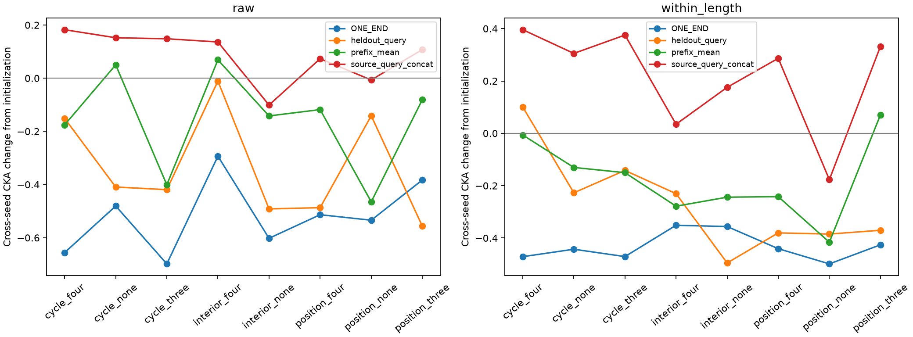
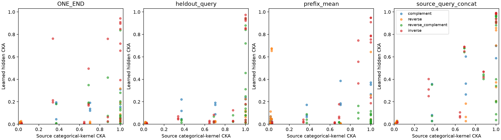

这是在初步 ONE_END 跨种子结果之后追加的探索性分析，所有位置、组合、输入算子与种子均保留。ONE_END 沿用原仓库的任务无关前缀测量；另加入前缀有效 token 均值、共同未见任务 descents 的查询位置，以及四个已训练任务查询位置的拼接。
已训练查询拼接只在同一组的不同种子间，或同一模型的原始/变换输入间比较；没有将不同查询任务集直接当作相同输入做跨组比较。特征提取不接收任何答案标签。

图中为训练后减初始化的跨种子 CKA。三个种子形成的三个配对并不独立；这些变化也不是原论文正确变换对照的同一端点。

对每组任务，在 complement、reverse、reverse-complement、inverse 下比较隐藏表征，并计算源任务答案独热编码的精确 CKA。独热核只是指定输出编码下的数学参照；它的排序不保证训练后隐藏几何相同。13 个情况有明确的任务向量线性变换公式；19 个情况在 n=10 找到原答案相同、变换答案不同的反例。无同输入线性恒等式的组仍可具有输入变换闭合关系。
每折排除某一源组合的全部种子与算子，用其他组合预测该组的变换后隐藏 CKA。基线控制初始化 CKA、源最终成绩和学习 AUC、源标签条件熵/联合熵/相关性，以及算子、初始化固定效应；增加源答案变换核作为结构参照。岭惩罚固定为 1，特征标准化只使用训练折。
| 位置与长度处理 | 基线 R² | 加入答案核 R² | MAE 降低 |
|---|---|---|---|
| ONE_END_raw | -0.173 | -0.120 | +0.0149 |
| ONE_END_within_length | -0.004 | 0.268 | +0.0329 |
| heldout_query_raw | -1.872 | -1.373 | +0.0507 |
| heldout_query_within_length | -0.339 | 0.022 | +0.0468 |
| prefix_mean_raw | -1.916 | -1.899 | +0.0087 |
| prefix_mean_within_length | 0.001 | 0.179 | +0.0183 |
| source_query_concat_raw | -0.337 | 0.225 | +0.0523 |
| source_query_concat_within_length | 0.182 | 0.773 | +0.1317 |
变换公式和反例 · 答案核 · 跨种子完整测量 · 全部变换 CKA · 逐折预测 · 分析登记 · 提取代码与数据指纹